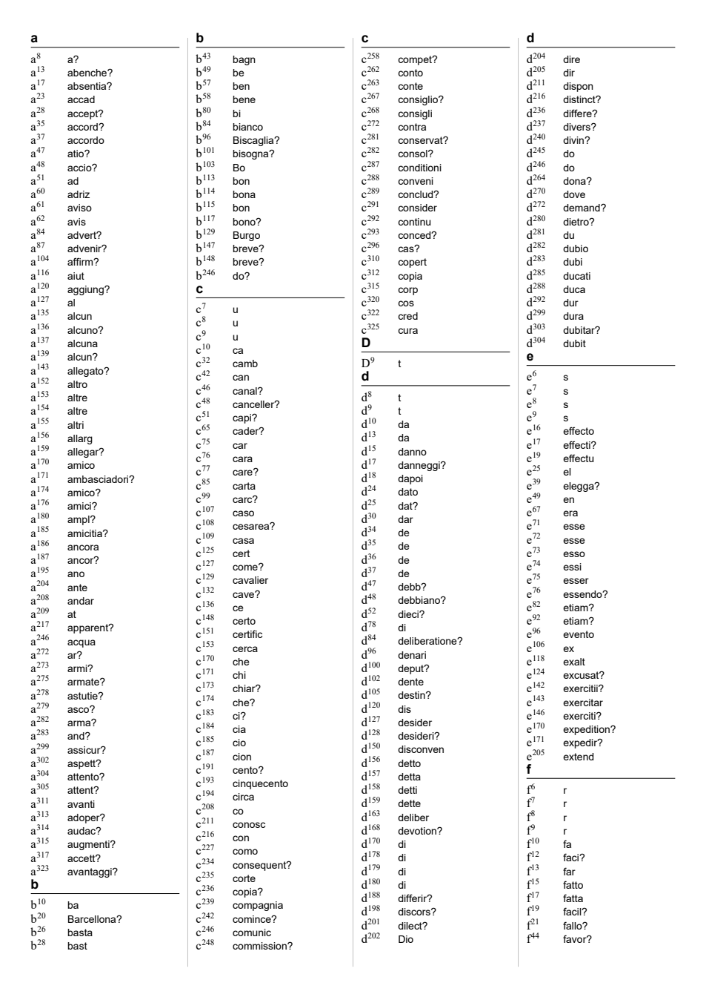

01 The volume
Français 3022 is a sixteenth-century recueil of originals and copies, mostly imperial correspondence of 1527–28 that came into French hands. There are about twenty letters of Juan Pérez, the imperial secretary in Rome, several of them in clear. There are three letters of the Marquis del Vasto (Alfonso d’Ávalos), who commanded the imperial infantry after the Sack of Rome. There are Spanish “avertimientos” of 1528 from Fuenterrabía and Bayonne, and a small bundle of Italian espionage papers. The notice’s folio numbers run about three higher than the ink foliation. Below, folios are the ink numbers and “views” are Gallica’s (ark btv1b90601558).
| No. | Folios (views) | What it is | Outcome |
|---|---|---|---|
| 10 | ff. 26–28 and loose f. 39 (51–55, 76–77) | Del Vasto to Charles V, “de Ysola”, 27 September 1527 | Read in part by others (Lasry 2023, Tomokiyo 2026); 47 of 1,146 words queried; not reworked or measured here |
| 6 | ff. 16v–17v (32–34) | Catalogued as an anonymous report; actually del Vasto to Charles V, Rome, early December 1527 | Read, 98.0 % of 1,680 cipher signs measured; 10 code groups and 9 short stretches open |
| 19 | ff. 40–43 (78–85) | Del Vasto to Charles V, Rome, 6 November 1527 (not in the target, same key as no. 6) | Lasry’s letter layer for f. 40; ff. 41r–41v searched here for contexts; ff. 41–43 not transcribed; content summarised in CSP Spain |
| 20 | ff. 44–46v (86–91) | Italian letter to “Garbino”, Madrid, 11 April 1528 | Transcribed here; deciphered in part with Rosson’s key (79.8 % in connected stretches) |
| 20bis, 21 | ff. 48–50v (94–98) | A jargon, a code-name list and an “Aditione nel zifra” | Read; they explain the design of no. 20’s code |
02 Checked first: existing decipherments
The catalogue says “no decipherment noted”, and the obvious place for a French decipherment was checked first. The eighteenth-century Clairambault copies were searched. Clairambault 327 ff. 279–280 copies no. 20 as “Lettre non signée écrite au seigneur Garbino du 11 d’avril 1528 … partie en chiffre, partie non”, with the cipher copied and nothing deciphered. Clairambault 314 f. 337 copies the addition sheet. Neither carries a decipherment, and none turned up in the neighbouring français volumes.
The decipherments are modern. Tomokiyo’s cryptiana pages record that George Lasry sent him a solution of no. 10 in 2023. In 2026 Tomokiyo edited it into a Spanish text and published it as “Gasto–Charles V Cipher 1”. That text is not complete: of its 1,146 words, 47 carry a query, 19 of them a bare “?” for a group not decoded, and a few stretches are garbled; Tomokiyo still asks for someone to finish it. He also published Lasry’s preliminary letter-level decryption of a second cipher, used in no. 6 and in no. 19, asking for someone who knows Spanish to finish that too. No. 10 is therefore counted here as deciphered in part by others. It was not reworked, and since only an edited text exists and no sign transcription, it is not measured.

03 No. 6: del Vasto’s December letter
The piece catalogued as an anonymous report opens in clear: “A seis de noviembre escrivi a V. M. muy largo y tanbien a xxvij de setiembre, cuyos duplicados van con esta”. The clear first page reports the agreement with the Pope for “la libertad suya y de los cardenales” (the capitulation of 26 November) and says that del Vasto is still in Rome only because the Prince of Orange, “el qual se espera que verna de aqui a tres dias”, has not yet arrived to take the command. That puts it in the first days of December 1527.

The cipher is a Caesar shift of one place over a 21-letter alphabet, with homophones, plus a nomenclator of three-letter groups beginning with b, c or d. Lasry’s decryption has the letter layer right; it checks against the f. 16v ciphertext word for word. It leaves the groups as [doz], [deh] and so on. His key also pairs a row of syllable signs two to a label (al, con, de, el, es, la, lo, no, para, por, qve, sin), and checked against the glyphs these pairings merge different signs: boz is esto, not “fin” (“y por esto pienso”, “en estos tiempos”); bab is mas; bar is tan (“tan adelante”, “tan cerca”); bop is como; bopt, Lasry’s “con s”, is ellos (“porque ellos no tienen gente”); bie is el, not “al”; bis is de; and bep is es in some places and en in others. Two of his cipher words are not text at all: at stands at every boundary between clear and cipher, going in and coming out, and quia stands before the cipher on f. 17r and f. 41r. They are switch markers. The barred sign ≡ is a stop.
The code groups were identified by taking every occurrence of each across nos. 6 and 19 and reading the Spanish around it. All are grade I (inferred from context); none is confirmed by a key or a clear copy.
| Group | Reading | Deciding context |
|---|---|---|
| doz | Lautreque | “piénsase que [doz] será para ir sobre el reino” |
| deh | la Marca | “su camino es por la [deh], porque traen su artillería por agua hasta Ravena” |
| bog | buelta | “camina la [bog] del reino”; “la [bog] de Perosa” |
| ceg | hombre | “no quieren ser más [ceg]s d’armas” |
| daf | quiere | “para caminar un exército se re[daf]n” (requieren) |
| dor | para | “[dor] ir sobre el reino”, “[dor] caminar” |
| baf | primero | “mi parecer es [baf] que salga el exército” |
| dnd | qual | “Siena, la [dnd] es muy devota de V. M.” |
| dnb | dinero | “alguna manera de [dnb] o de hazelles la guerra” |
| biq, boq | duque, estado | “al [biq] de Urbino”; “el [boq] de Urbino y tomallo” |
| cef | gente | “esta [cef] ha venido en un número tan poco” |
| dod, don, dum, cez, raq | quando, si, su, ni, mi | “por vía de [dum] Santidad”; “no se puede mover [cez] dar un paso” |
| bet | dello(s) | “no quedando en Lombardía exército [bet]s tan pujante”; no. 19 f. 41v “el poco cuidado que [bet] he” |
| da | otro (not “liga”) | “no[da]s” = nosotros; no. 19 “no hiziesen [da] fruto” |
| dop | tiempo (not “invierno”) | “si el [dop] que ya entra fuerte no lo estorva”; “en estos [dop]s” |
| dab, das | tiene(n) | “porque ellos no [dab]n gente” |
| <37> | final(mente) | “y [<37>]mente no podrían”; in no. 19 “y [<37>]mente yo veo” |
The rest of the table (di mandado, coy Italia, der poca, bim empresa, cip mil, cac Florencia, bag rica, det he, bad basta(ra), bas deve or puede, and others) is in n6_codes.json and n6_reading.md. The measure is taken on n6_signs.tsv, which keeps Lasry’s decryption as a list of cipher signs, adds five signs seen on the image that his list leaves out, and gives each run a reading and a status; n6_measure.py checks it reproduces his stream exactly.
| State of the key | Cipher signs read | Fraction |
|---|---|---|
| Lasry’s key as it stands | 1,555 / 1,680 | 92.6 % |
| with the code readings of 18 September | 1,595 / 1,680 | 94.9 % |
| with the 22 September corrections and additions | 1,646 / 1,680 | 98.0 % |
With these, the deciphered text of ff. 16v–17v is a strategic proposal. Del Vasto wants the army out of Rome and moving north before Lautrec settles the matter in Lombardy. His plan: secure Siena, “la qual es muy devota de V. M.”; threaten Florence so that the League must come to its aid; take Perugia, “una tierra del Patrimonio muy rica y muy gruesa”, and the state of Urbino, “en el qual se hallará poca resistencia”; and pass into the Marche, “donde no pueden faltar vituallas”. It ends with a warning that runs through all his letters of that winter: “que el exército por lo de advenir no se puede sostener desta manera”, and that with so many shortages “es imposible que el servicio de V. M. se haga como sus fieles vasallos deseamos”.
04 What remains uncertain in no. 6
Every code value above is grade I, inferred from context. The 34 signs not yet deciphered are these.
Ten code groups, eleven signs. Each has one or two contexts, and none fits a single value. Blocker: open codes; more contexts are in no. 19 ff. 41–43, which are not yet transcribed.
- dnh: “porque según la [dnh] no la seguirán en venir tan adelante”. Roma, suggested on 18 September, does not fit.
- bnq: “dificultoso el bolver y que mas el quedar y [bnq] y finalmente no podrían”.
- rar (twice): “es ganar en el camino a [rar] y ponella debaxo el mando de V. M.”; “si no los suyços se acogieren [rar]”. Florencia or Luca are candidates; neither is settled.
- car: “sera poner espanto a [car] y ocasión a estos enemigos”.
- cny: “en esta empresa servirá … mil [cny]”.
- bny: “de hazelles hazer [bny] un movimiento”.
- beb: “podrase ir más fácilmente a socorrella [beb] porque es mejor el camino”.
- bnc: “podrase tomar apuntamiento [es bnc]”.
- ge+: after “como si se estuviese el exército dentro”; possibly a stop.
- der at 17va.2: “la principal de [der de] país”. Elsewhere der = poca, which does not fit here.
Nine short stretches, 23 signs besides the codes. The signs are transcribed, but the syllable values that make sense elsewhere make none here, most likely because Lasry’s labels merge different glyphs, as they do for es/en and con/tan/ellos. Blocker: open codes; they need a glyph-level retranscription of these words.
- the head of f. 16v, “[y y por] [mq] creo mas presto”;
- “[en de las los] que más se ha de trabajar”;
- “el duque de Urbino [es de] otro exército está en Narni y Todi”;
- “servirá [que de con] mil [cny]”;
- “irá [que l] camino”;
- “la principal de [der de] país”;
- “si caminara en [cnt] parte” (ninguna or otra);
- “se puede esperar [es] más ventaja”;
- “apuntamiento [es] [bnc]”.
A third letter in the same key would settle most of them. No. 19 is one. Lasry decrypted its first leaf; ff. 41r and 41v were searched on the images for the open groups, which gave bet = dello and the switch markers, but ff. 41–43 have not been transcribed in full. CSP Spain III.2 no. 233 summarises its content from a copy in the Salazar collection, not its words, so it gives no crib.
05 No. 20: the Garbino letter and Ranzo’s code

No. 20 is an Italian letter, dated at Madrid on 11 April 1528, endorsed on the back to “Garbino”. It alternates clear and code. The clear passages report that the Chancellor was ill with gout, that fifty galleys were being fitted out, that a million ducats had been raised in Castile and 500,000 more were expected from the Cortes of Aragon, and that the Empress was in the seventh month and the prince would be sworn heir. The coded passages, about two thirds of the letter, are what it was sent for.
The design is explained by the sheets bound after it. On f. 48 is a jargon, with more on f. 49: cover letters signed “Antonio de Cosenza” to “Andrea Romano in Valencia”, news disguised as the price of grain, and a list of cover names. On f. 49v the Emperor is “Joan Jacobo”, del Vasto “portolano de Gergenti”, Garbino himself “antonio petra”. On f. 50 is an “Aditione nel zifra” that shows how the code works.

Each code group is the initial of the word with a number: apresso is a327, Cartagenia c327, Garbino g215, soa santità s395, and common syllables get groups of their own. The addition continues each letter’s list from where the base table stopped (a1–326, b1–156, c1–326 …). The same code is used in the signed letters of Hieronimo Ranzo in BnF fr. 2988 ff. 2 and 9–10 and fr. 3019 f. 73. Ranzo was a Vercelli nobleman at Charles V’s court, of the family of Gattinara’s mother. Norbert Biermann had already tied the addition sheet to Ranzo’s code in a 2017 Cipherbrain thread. The Garbino letter is very likely Ranzo’s.
06 Rosson’s key applied to this transcription
On 14 October 2026 a Cryptoole alert led to Paolo Rosson’s page “The Venetian? cipher with superscript digits of 1528” (Cryptoole IT1520-1, listed solved on 6 October 2026 with George Lasry). Working with Claude, from this project’s transcription of no. 20 and of Ranzo’s letters in fr. 2988, he built a key table of 779 values (117 sure, 595 probable, 67 guesses). Numbers 0–5 are nulls, 6–9 spell single letters, 10 and above index a list of stems under the initial. He estimates about 85 % of tokens right, and checked the transcription against the images, finding that in fr. 2988 57 “g” are s and 63 “t” are r (two hands). No palaeographer has checked the reading.
His key and corrections were applied here to the existing transcriptions (measure_rosson.py). The fit is not independent, since the key was built on them.
| Transcription | Groups | With a value | No value | In runs of six or more sure or probable values |
|---|---|---|---|---|
| No. 20, fr. 3022 ff. 44r–46v | 1,311 | 93.8 % | 44 | 79.8 % |
| Ranzo, fr. 2988 ff. 9r–10v (DECODE R1894; R4450 is a copy of f. 9) | 1,776 | 97.2 % | 24 | 93.1 % |
| Ranzo, fr. 2988 ff. 2r–v (not R1894) | 816 | 98.0 % | 16 | 88.7 % |
A value is not yet a reading: the last column is the stricter one, and neither letter reaches the 95 % bar of this site, so both count as deciphered in part, by Rosson with Claude. The decoded text is coherent Italian of 1528. On the last page of Ranzo’s letter, for example, the writer says that fornari has left for Italy with Julian to carry a sum of money for exchange payments to the army; earlier in the same letter he tells the addressee to address letters through Hieronimo Ranzo and to mention nothing of them in his others. The blind controls of his page (87.6 % and 93.4 % on made-up codes) were not rerun here.
The earlier verdict that no. 20 was blocked for lack of key material was therefore wrong in one respect: a key could be built, by a reader who could look at the images and the clear stretches together. This project’s annealer, validated on a control, had stopped at function words.
07 George Lasry’s Ranzo decipherment
Contributed by George Lasry. Based on Norbert Biermann’s transcription (2021); decipherment achieved in collaboration between Claude Opus 5.5 and GPT-6 Astra. The Codex consolidation of 6 October 2026 covers five letters, including Français 4050 and 6638 in addition to the letters above.
Paolo Rosson independently obtained a contemporaneous solution using Claude. Tomokiyo’s Cryptiana article, dated 6 October 2026, records receiving Lasry’s report only hours after Rosson’s email. It presents Rosson’s solution, based on Bourdeau’s transcription. The present contribution preserves the separate Biermann-based transcription and key; no priority is claimed.
The working key has 871 observed mappings: 5,967 of 6,221 non-null occurrences receive proposed meanings (95.9% assignment coverage), including 381 tentative mappings used 841 times. There are 207 presumed null occurrences and 254 unassigned non-null occurrences. These are coverage figures, not a measured percentage of correct plaintext. The key was reconstructed through cribs and structural analysis, with selected entries checked against the historical addition at Français 3022 f. 50.
Complete reconstructed visual key (PDF) · Visual key (HTML) · Transcription, key, complete literal decipherment and verification

In the excerpts, spaces, punctuation and accents are editorial; ? retains tentative readings from the key. Each translation follows the whole quoted passage. The expandable ciphertext is transcribed in the original letter-and-superscript format.
A compact cipher for letters that might be seized
BnF Français 2988 f. 9v; 2:9v:7–2:9v:13
Transcribed ciphertext (102 elements)
2:9v:7 y8 a137 v211 s138 d303 z7 n9 c170 L47
2:9v:8 L99 i100 z15 d48 e75 v114 e7 t30 y19 n90 L43 z8 t30 p10 s10 r41
2:9v:9 m104 q44 c170 m57 e67 n8 p149 t54 t74 p280 f2 z9 n8 v13 r41
2:9v:10 d36 v191 a152 n124 z15 c170 t74 m56 c216 d156 c10 t10 n38 m9 Q13 L108
2:9v:11 q12 p281 r10 n8 s113 r41 b147 m136 i100 p232 m7 y11 p149 m119 o157 f8
2:9v:12 o113 c320 z9 p255 t118 n6 c246 z7 r41 Q18 i11 c320 n7 L10 p251 d78
2:9v:13 z15 c227 L77 a62 n8 c170 h30 r10 n9 z8 d10 r41 p149 g84
Decryption
Et? alcuna volta, se dubitarai? che le lettere in zifra debbiano? esser viste et? non lassate? passare, maxime? quelle che manderai per terra, ti potrai valere de uno altro novo zifra che ti mand? con detto Cataneo. Con lo qual potrai scribere brevemente? in picciolo?. Et? per meglio ordinar ogni cosa potrai comunicare con? Iacomo? così la pratica di zifra como li avisi che haverai a dare per giornata.
English translation
And? if at any time you suspect? that the ciphered letters may? be inspected and? not allowed? through, especially? those you send overland, you may use another new cipher that I send? you with the said Cataneo. With it you will be able to write briefly? and in small writing?. And? to arrange everything better, you may discuss with? Iacomo? both the use of the cipher and the reports you will have to give from day to day.
The recipe for alum-water secret writing
BnF Français 6638 p. 69; 5:69:11–5:69:17
Transcribed ciphertext (73 elements)
5:69:11 L10 d157 a246 z6 L135 n10 t10 f13 z6
5:69:12 n9 i100 q49 m212 c185 s8 p249 z8 z9 p3 L135 s251 s7
5:69:13 d78 p246 b84 c170 p242 n8 h29 y31 p228 s325 L108 b58
5:69:14 d18 m167 L106 i100 a246 c174 s251 s9 b28 s6 z6 L10 q20
5:69:15 d78 z8 L135 y28 p261 s234 r168 z7 t10 L10 q10 Q23
5:69:16 L107 z9 L135 p149 t133 h79 y24 p246 p280 z7 n8 n38
5:69:17 s113 r41
Decryption
La detta acqua alumenata farai in questo modo: cioè piglia alume sufficiente? di più bianco che possi havere et? pestalo bene. Dapoi mettilo in acqua che? sufficiente? baste a la quantità di alume. Et? poiché? sia reposata? l’aqua con? lo alume per tre hore o più, potrai ne scribere.
English translation
Prepare the said alum water in this manner: take a sufficient? quantity of the whitest alum you can obtain and? pound it well. Then put it into water that? is sufficient? for the quantity of alum. And?, after? the water with? the alum has rested? for three hours or more, you will be able to write with it.
The full working decipherment retains unresolved codes and tentative assignments. These two passages are examples, not evidence that every part of the five letters is settled.
08 Why our solver could not decode it
An initial-letter code is usually weak for one reason: if each letter’s list is in alphabetical order, the number tells you roughly where in the dictionary the word sits. That was the first thing tested. The distribution of the numbers within each initial was compared with where frequent Italian words fall in an alphabetical list, against shuffled orders. No. 20 scores z = −0.5. The same test run on Castiglione’s letters encoded with a genuinely alphabetical code scores about +6.5. Ranzo’s numbering is not alphabetical, so a number says nothing about its word beyond the initial.
What is left is a word substitution under one constraint, the initial letter, with about 550 group types in no. 20 and 730 in Ranzo’s own letters. All 1,315 groups of no. 20 were transcribed from full-resolution scans, and about 2,600 more from the six Ranzo pages. The two share 316 group types, which confirms the key is one table. An annealer then assigned each group a word with the right initial, treating the z groups as nulls, and scored the result with a word-bigram model built from Castiglione’s Lettere (diplomatic Italian written from Spain in these same years) and Guicciardini. It was first run on a control: 3,900 words of Castiglione held out of the model and encoded the same way.
| Test | Tokens right | Group types right |
|---|---|---|
| Control, 3,900 encoded words of Castiglione | about 46 % | about 9 % |
| No. 20 and Ranzo, 3,900 groups | Same function words on every restart; content words vary from run to run | |
That is the limit of the method, and the control shows it. Frequent words come out, because their contexts fix them: c170 che, i100 il, p149 per, n38 non, r41 re, s233 sua, m170 mi, p246 più. The words that carry the news occur once or twice each and do not. Nor was there a crib to be had. No Ranzo page repeats a passage of no. 20 (the longest shared run is a stock three-group phrase), the copy marked “dup.ª” duplicates another Ranzo letter rather than this one, and the Clairambault copy carries no decipherment. The other “pièces en chiffre” of fr. 2988 are a different, French, symbol cipher.
09 What would finish it
No. 20 and the Ranzo letters are open at the margin. What remains is a comparison of Rosson’s readings with the images page by page, the 44 groups of no. 20 and 24 of R1894 that have no value, his guesses, and the other Ranzo letters (fr. 2988 ff. 2r–v and the fr. 3019 f. 73 duplicate). Ranzo’s own base table would settle the rest: any of his letters that was deciphered at the time or survives in clear. The places to look are Gattinara’s papers in the Archivio di Stato di Vercelli, the imperial correspondence in Simancas and Vienna, and the other side of the Garbino network. The transcriptions and the solver are ready for a key or a crib; with even a few hundred words of known plaintext the substitution would close quickly. For no. 6 the work is in hand here: a full transcription of no. 19 ff. 41–43 for more contexts of the ten open groups, and a glyph-level retranscription of no. 6 to separate the syllable signs Lasry’s labels merge. No. 10’s queried words would need a sign transcription of ff. 26–28 and 39, which no one has made.
10 Sources and files
- BnF français 3022 (Gallica), views 32–34 (no. 6), 51–55 and 76–77 (no. 10), 78–85 (no. 19), 86–98 (nos. 20–21); français 2988 (Gallica), views 6–7 and 17–20; français 3019 (Gallica), views 114–116; Clairambault 327 (Gallica), views 263–264.
- Norbert Biermann, Ranzo transcript.docx (2021), five letters, supplied by George Lasry. S. Tomokiyo, “Venetian Ciphers with Superscripts”, 6 October 2026, documents the contemporaneous Rosson and Lasry reports.
- P. Rosson, The “Venetian?” cipher with superscript digits of 1528 (key table, read stretches, transcription corrections, 6 Oct 2026).
- S. Tomokiyo, cryptiana, George Lasry’s solutions (Lasry’s Cipher 2 key and decryption of no. 6, the key extended here) and Spanish ciphers, “From the Archives”.
- Calendar of State Papers, Spain, vol. III part 2 (1527–29), British History Online, no. 233.
- K. Schmeh, Cipherbrain, 17 May 2016, comments by Norbert Biermann and Thomas, 2017.
- Repository: targets/vasto1527/, with notes, the no. 6 sign file and its measure (
n6_signs.tsv,n6_measure.py), the code table, the transcriptions of no. 20 and of Ranzo’s letters, the addition sheet as JSON, and the solvers and control.
Notes, transcriptions and scripts are in targets/vasto1527/.